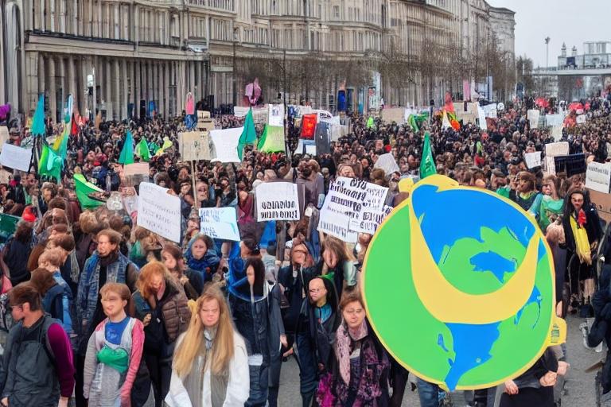
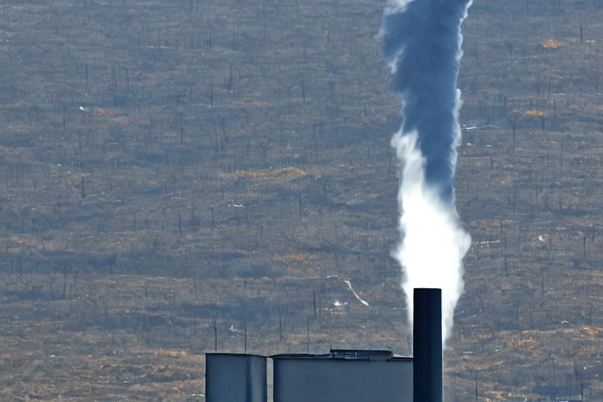
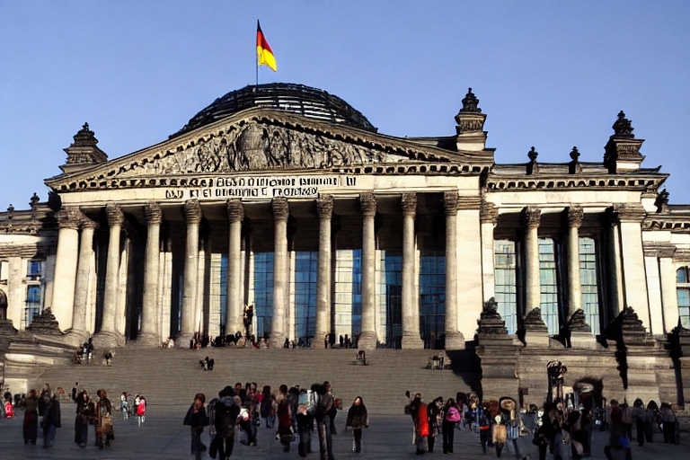

Die Klimakrise ist eine der größten Herausforderungen unserer Zeit und junge Menschen auf der ganzen Welt treiben den gesellschaftlichen Wandel voran. Eine der bemerkenswertesten Jugendbewegungen, die sich für den Klimaschutz einsetzt, ist "Fridays for Future". Aber wie hat alles angefangen? In diesem Artikel erkunden wir die Ursprünge, Ziele und Errungenschaften von "Fridays for Future" sowie wie Schülerinnen und Schüler und Umweltaktivisten mobilisieren, um für unsere Zukunft zu kämpfen.
Die soziale Bewegung entstand aus der inspirierenden Aktion einer Teenagerin, deren mutiger Schritt weltweite Aufmerksamkeit erregte und Millionen motivierte. Die schwedische Schülerin Greta Thunberg saß im August 2018 drei Wochen lang vor dem Parlament in Stockholm und besuchte statt des Unterrichts, um auf die Dringlichkeit des Kampfes gegen den Klimawandel aufmerksam zu machen. Ihr Schild mit den Worten "Skolstrejk för klimatet" (Schulstreik für das Klima) wurde zum Symbol einer neuen Ära des Klimaaktivismus. Mit ihren entschlossenen Aktionen entfachte Greta Thunberg eine globale Bewegung. Schülerinnen und Schüler begannen sich jeden Freitag zu versammeln, um für konsequente Klimapolitik zu demonstrieren - so wurde "Fridays for Future" geboren."
Was ursprünglich als einzelne Aktion einer Schülerin begann, hat sich zu einer globalen Bewegung entwickelt. Schülerinnen und Schüler auf der ganzen Welt haben "Fridays for Future" inspiriert und sind Teil des Kampfes für eine nachhaltige Zukunft. Im Laufe eines Jahres wuchsen der Klimastreik rasant an und wurde zu einer internationalen Bewegung mit Teilnehmerinnen und Teilnehmern aus über 150 Ländern. Durch soziale Medien vernetzt, organisieren sich die Jugendlichen selbstständig und nutzen ihre Stimme, um Politikerinnen und Politiker weltweit aufzufordern, Maßnahmen gegen den Klimawandel zu ergreifen.
"Fridays for Future" appelliert an die Verantwortlichkeit der Politik, wissenschaftsbasierte Klimamaßnahmen umzusetzen, um die Erwärmung der Erde auf maximal 1,5 Grad Celsius zu begrenzen – ein Ziel des Pariser Abkommens von 2015. Mit kreativen Protestformen, einschließlich Schulstreiks, Demonstrationen, Petitionen und Online-Kampagnen, zeigt die Bewegung, dass junge Menschen weltweit bereit sind, für ihre Zukunft einzustehen.
Die Mobilisierung innerhalb der "Fridays for Future"-Bewegung zieht ihre Kraft aus einer breiten Palette an Strategien. Der Gebrauch digitaler Plattformen hat sich als besonders wirksam erwiesen – soziale Medien, Hashtags und Online-Petitionen sind zu Werkzeugen der Wahl geworden, um Informationen zu verbreiten und Menschen weltweit zu erreichen. Organisatoren nutzen das Internet nicht nur, um Proteste und Veranstaltungen zu koordinieren, sondern auch, um Bildungsmaterialien zu teilen und Bewusstsein zu schaffen. Offline, werden lokale Gruppen oft durch Mundpropaganda oder Veranstaltungen auf Schulen und Universitäten gebildet. Diese Kombination aus Online- und Offline-Bemühungen ermöglicht eine breite und inklusive Teilnahme, wobei die Diversität der Teilnehmer die Vielfalt und Reichweite der Bewegung stärkt.
In Deutschland haben sich "Fridays for Future"-Demonstrationen zu einem prominenten Ausdruck des kollektiven Strebens nach Klimagerechtigkeit entwickelt. Die Proteste zeichnen sich durch Kreativität und Friedfertigkeit aus, wobei Teilnehmer vielerorts vom Pausenklingeln direkt auf die Straßen und Plätze ziehen, um ihre Botschaften zu verbreiten. Diese Demonstrationen, oft ergänzt durch Musik, Kunst und die persönlichen Geschichten junger Aktivisten, machen die dringende Forderung nach Klimaschutz unüberhörbar. Die Beteiligung ist bemerkenswert diversifiziert, mit Schülern, Studierenden und Unterstützern aller Altersgruppen, die Seite an Seite für die Umsetzung notwendiger Klimaschutzmaßnahmen eintreten.
Die Klimastreik-Bewegung sieht sich mit Herausforderungen wie Politikverdrossenheit und einer manchmal zögerlichen öffentlichen Antwort konfrontiert. Trotzdem haben die unermüdlichen Anstrengungen zu konkreten Ergebnissen geführt. Die Stimmen der jungen Aktivistinnen und Aktivisten wurden auf internationalen Konferenzen gehört, und das Bewusstsein für Klimafragen ist in der Gesellschaft deutlich gewachsen. Die Klimaaktivisten haben dazu beigetragen, dass Klimawandel als drängendes Thema in den Vordergrund vieler politischer Agenden rückte und mancherorts zu gesteigerten Klimaschutzverpflichtungen führte. Zahlreiche Städte erklärten den Klimanotstand, und viele Länder verstärkten ihre Bemühungen um nachhaltige Entwicklung.
Die "Fridays for Future"-Bewegung hat auch politische Entscheidungsträger in Deutschland beeinflusst. Durch die öffentliche Aufmerksamkeit und den Druck der Bewegung wurden verschiedene Maßnahmen zur Verringerung des CO2-Ausstoßes und zur Förderung erneuerbarer Energien eingeleitet. Im September 2019 hat die deutsche Bundesregierung ein Klimapaket beschlossen, das unter anderem eine CO2-Steuer und neue Maßnahmen im Verkehrssektor beinhaltet. Die Bewegung fordert jedoch weiterhin ehrgeizigere Ziele und Maßnahmen, um die globale Erwärmung auf unter 1,5 Grad Celsius zu begrenzen.
"Fridays for Future" beweist eindrücklich, dass gemeinsames Handeln Veränderungen herbeiführen kann. Die Bewegung inspiriert weiterhin Menschen jeden Alters, für den Schutz unseres Planeten aktiv zu werden, und sie motiviert viele, sich bei der Gestaltung einer klimafreundlichen Zukunft einzubringen. Während die Welt weiterhin mit den Auswirkungen des Klimawandels ringt, bleibt "Fridays for Future" eine wichtige Stimme in der Diskussion um nachhaltige Lösungen. Die Fortsetzung des Engagements jedes Einzelnen ist entscheidend für den Erfolg dieser globalen Initiative.
© 2024 by Jonah Schnakenberg